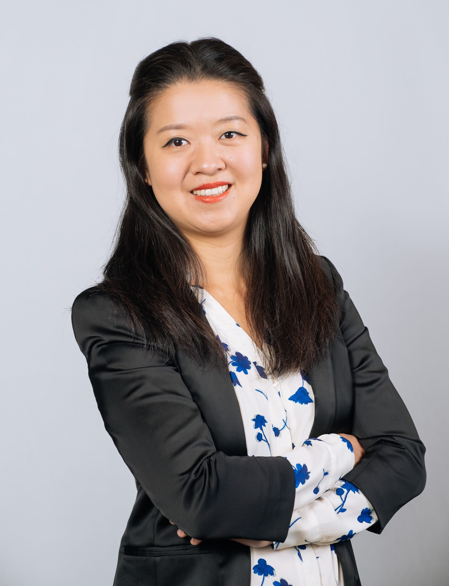

Xi Li
Associate Professor of Accounting
London School of Economics and Political Science
Dr. Xi Li is an Associate Professor of Accounting at The London School of Economics and Political Science (LSE). She is also a Technical Advisory Board Member of the Transition Pathway Initiative (TPI) Centre and a Research Fellow at the Centre for Endowment Asset Management at University of Cambridge Judge Business School.
Dr. Li's research focuses on sustainability, particularly in the areas of shareholder engagement on Environmental, Social, and Governance (ESG) issues. Her work has been recognized with various international awards and grants and published in leading academic journals in accounting and finance.
Featured Research
Forthcoming · Journal of Finance
Coordinated Engagements
- Honourable Mention, 2025 Moskowitz Prize for Socially Responsible Investing
- First Prize, Brandes Institute 2020 Research Paper Contest
- Finalist, 2021 John L. Weinberg / IRRCI Research Award
- Featured in Harvard Law School Forum on Corporate Governance
Affiliations
- Associate Professor of Accounting · London School of Economics
- PhD Program Co-Director, Department of Accounting · London School of Economics
- Technical Advisory Board Member · Transition Pathway Initiative (TPI) Centre
- Research Fellow · Centre for Endowment Asset Management, Cambridge Judge Business School
- Research Member · European Corporate Governance Institute (ECGI)
- Affiliated Researcher · HKU Jockey Club Enterprise Sustainability Global Research Institute